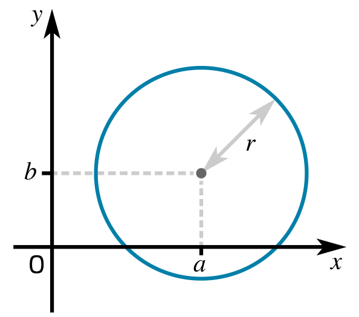

COMP2811 User Interfaces
Entire class definition in a single file
Compiler will generate one .class file for every class defined in the .java file
Accessibility specified explicitly for individual fields and methods
Class definition often split across two files
Compiler generates one file of object code, regardless of how many classes appear in the implementation file
Class definition divided into different sections with different levels of accessibility
Methods can be inlined, for performance
Methods that don’t modify object state must be declared as const

We want to represent circles with a given radius and origin
We want to be able to query these attributes
We would also like to be able to compute area & perimeter
… and test whether a given point is inside a circle
circle.hpp#pragma once
#include <cmath>
class Circle
{
public:
Circle(double r): Circle(0, 0, r) {}
Circle(double, double, double);
double getX() const { return xorigin; }
double getY() const { return yorigin; }
double getRadius() const { return radius; }
bool containsPoint(double, double) const;
double area() const { return M_PI * radius * radius; }
double perimeter() const { return 2.0 * M_PI * radius; }
private:
double xorigin, yorigin;
double radius;
};public section lists the things accessible to class users (constructors & methods)
private section lists the things not directly accessible to class users (typically fields)
#pragmacircle.hpp#pragma once
#include <cmath>
class Circle
{
public:
Circle(double r): Circle(0, 0, r) {}
Circle(double, double, double);
double getX() const { return xorigin; }
double getY() const { return yorigin; }
double getRadius() const { return radius; }
bool containsPoint(double, double) const;
double area() const { return M_PI * radius * radius; }
double perimeter() const { return 2.0 * M_PI * radius; }
private:
double xorigin, yorigin;
double radius;
};Circle object, so they are declared const
.cpp file
Simple methods can be implemented directly in the header file, as part of the class definition
This is an optimization hint to the compiler – a suggestion that it can substitute the code of the method body in all places where the method is called
Potentially a useful way to avoid the normal overhead associated with calling a method or function
Compiler is free to ignore the suggestion!
Single-parameter constructor:
Requires only the radius to be supplied
Is inlined, and delegates the work to three-parameter constructor, setting x & y to 0
Three-parameter constructor:
Requires values for x, y and radius
Is not inlined; implementation appears in .cpp file
circle.cpp#include <stdexcept>
#include "circle.hpp"
Circle::Circle(double x, double y, double r):
xorigin(x), yorigin(y), radius(r)
{
if (radius <= 0.0) {
throw std::invalid_argument("radius must be > 0");
}
}
bool Circle::containsPoint(double x, double y) const
{
double dx = x - xorigin;
double dy = y - yorigin;
return sqrt(dx*dx + dy*dy) <= radius;
}.cpp file
Circle:: prefix indicates that this is a member of the Circle class
new to create the object!
const qualifier needs to be used here as well as in the class definition
Could do this:
Often handled on Unix-like systems using Make tool:
Makefile
First line of a rule specifies target, then the things it depends on
Subsequent lines of rule, prefixed with Tabs, are commands needed to build the target from its dependencies
Higher-level approach uses CMake:
CMakeLists.txt
Note
CMake is a meta-build tool. Running it on Unix-like systems will typically generate a makefile, which can then be used to build the registered executables…
shape.hpp#pragma once
class Shape
{
public:
Shape(double x, double y): xorigin(x), yorigin(y) {}
double getX() const { return xorigin; }
double getY() const { return yorigin; }
private:
double xorigin;
double yorigin;
};Note
All code inlined into class definition, so no .cpp file!
circle2.hpp#pragma once
#include <cmath>
#include "shape.hpp"
class Circle: public Shape
{
public:
Circle(double r): Circle(0, 0, r) {}
Circle(double, double, double);
double getRadius() const { return radius; }
bool containsPoint(double, double) const;
double area() const { return M_PI * radius * radius; }
double perimeter() const { return 2.0 * M_PI * radius; }
private:
double radius;
};Shape class
extends keyword
circle2.cpp#include <stdexcept>
#include "circle2.hpp"
Circle::Circle(double x, double y, double r):
Shape(x, y), radius(r)
{
if (radius <= 0.0) {
throw std::invalid_argument("radius must be > 0");
}
}
bool Circle::containsPoint(double x, double y) const
{
double dx = x - getX();
double dy = y - getY();
return sqrt(dx*dx + dy*dy) <= radius;
}xorigin private so getX() is required here
In Java, dynamic binding of overridden method calls is the default, whereas in C++ static binding is the default
Static binding is enabled in Java by making a method final
Dynamic binding in enabled in C++ by
virtual= 0 indicates this is a ‘pure virtual method’ (one with no valid implementation in superclass)
virtual here (but clearer if we do)
vector<Shape*> shapes;
shapes.push_back(new Circle(2.5));
shapes.push_back(new Rectangle(0.0, 1.0, 11.5, 5.2));
shapes.push_back(new Circle(-1.6, 7.2, 3.5));
...
for (Shape* s: shapes) {
s->draw();
}Shape pointers, allowing for a mixture of types of shape
draw() on whichever type of object the pointer is referencing
Polymorphism
Loop on lines 6–8 is an example of polymorphic code; it will work with any type of shape, including classes that haven’t yet been created
We have
Explored the differences between class definitions in C++ & Java
Seen how constructors are written using an initializer list
Noted how we inline methods into a class definition, and identified the benefits of doing so
Examined how inheritance is implemented in C++
Seen that we enable dynamic binding by defining overridden methods as virtual and manipulating objects via pointers
C++ language tutorial at cplusplus.com
C++ Reference at cppreference.com
~70min YouTube video introducing C++ programming
LinkedIn Learning: Getting Started With C++
Lippman, Lajoie & Moo (2012) C++ Primer (5th ed.)